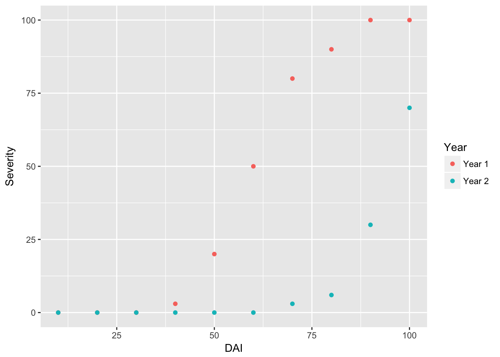
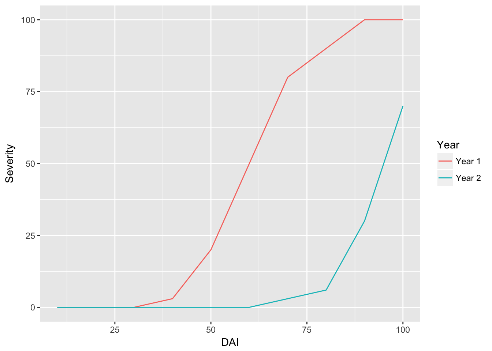
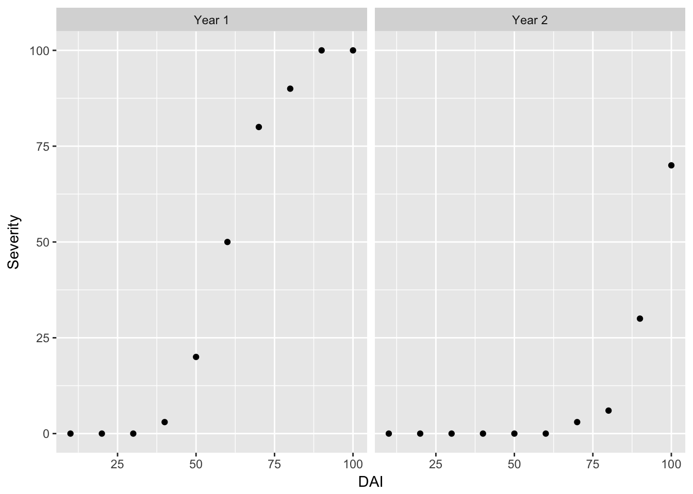
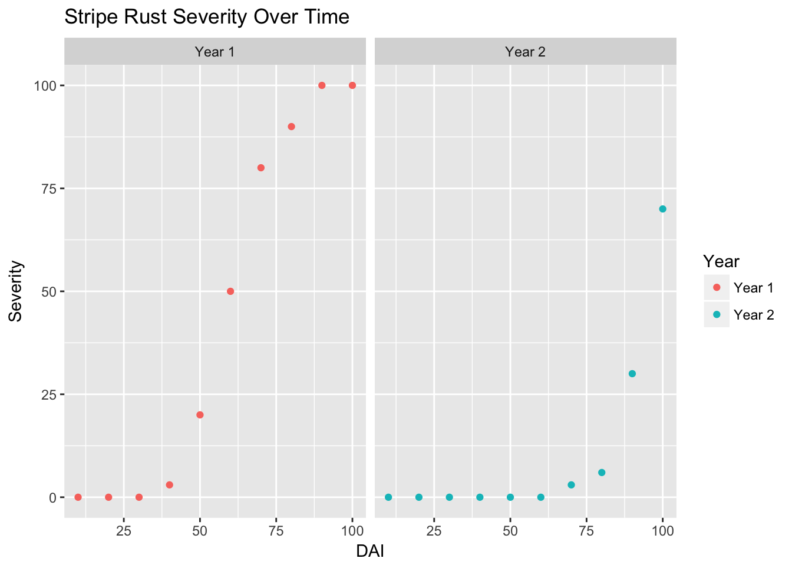

Introduction to R
Set working directory
First, set your working directory. This is a folder in which you will save this script, along with any files that will be used as part of your analyses.
R is essentially a fancy calculator:
1+1## [1] 23*2## [1] 68^8## [1] 16777216To make programming simpler, we usually save values or sets of values that we want to use again as “objects”. We do this using the symbols “<-” (called the “gets arrow”).
a <- 2 + 2
a## [1] 4b <- a + 2
b## [1] 6Comparing values will return “True” or “False”
2==2 ## does equal
2!=2 ## does not equalNote: R is case-sensitive and unforgiving!
Getting Started
First, lets do some fun stuff! To get started, install the package “ggplot2”. Packages are toolboxes that include functions, data and code for specific tasks. Note, remove the “#” from before install.packages() to load for the first time. The “#” comments out any code so it will not be run.
#install.packages("ggplot2")
library(ggplot2)Note: if you have installed an R package once on your computer, you will not need to install it again. You will need to load the library at the begining of each new session using the library() function
Getting Data Into R
Now make sure to place your “StripeRust.csv” file in the working directory that we set, then load the data in using the “read.csv” function.
RustData <- read.csv("StripeRust.csv", header = TRUE)
#Header = TRUE lets R know that we have headings in the first row of our data set.
head(RustData) ## check the first few rows of the dataset## Year DAI Severity
## 1 Year 1 10 0
## 2 Year 1 20 0
## 3 Year 1 30 0
## 4 Year 1 40 3
## 5 Year 1 50 20
## 6 Year 1 60 50names(RustData) ## check the column headers## [1] "Year" "DAI" "Severity"Note: this data is disease severity ratings taken in a wheat stripe rust nursury over the course of two seasons. “DAI” = days after inoculation.
We can plot this data using ggplot2. Tell the graphing function to use the data “RustData” and then add a layer to the plot with the geom_point() function with severity on the y axis and time on the x axis. Color the points by the year that data was collected.
ggplot(data = RustData) +
geom_point(mapping = aes(x = DAI, y = Severity, color = Year))
Note: It looks like disease took longer to develop in year 2, and was less severe by day 100.
If we switch from the function “geom_point” to “geom_line” we can plot lines and not points.
ggplot(data = RustData) +
geom_line(mapping = aes(x = DAI, y = Severity, color = Year))
We can look at the graphs side-by-side using the facet_wrap() function.
ggplot(data = RustData) +
geom_point(mapping = aes(x = DAI, y = Severity)) +
facet_wrap(~Year) 
Note: be sure to include a “+” at the end of each line, until you want to close the command.
Finally, lets add a title!
ggplot(data = RustData) +
geom_point(mapping = aes(x = DAI, y = Severity, color = Year)) +
facet_wrap(~Year) +
labs(title = "Stripe Rust Severity Over Time")
Vectors
Vectors are a way to set a series of data elements as an object.
v1 <- c(1, 2, 3, 4, 5) #numbers
v2 <- c("hello", "world") #characters
v3 <- c("TRUE", "FALSE", "TRUE") #logical values (also could be - "T", "F", "T")Lets make a vector with hypothetical ratings of “R expertise” on a scale of 1-10.
WithR <- c(8.5, 6.5, 4, 1, 3, 10, 5, 5, 5, 1, 1, 6, 6)
WithR## [1] 8.5 6.5 4.0 1.0 3.0 10.0 5.0 5.0 5.0 1.0 1.0 6.0 6.0We can use the following functions to look at some summary statistics.
summary(WithR)## Min. 1st Qu. Median Mean 3rd Qu. Max.
## 1.000 3.000 5.000 4.769 6.000 10.000mean(WithR)## [1] 4.769231sd(WithR)## [1] 2.795945And graph a histogram of this distribution!
hist(WithR, xlab = "Self-Reported R Proficiency")
Notice that I choose to name my new object “WithR”.
It is important to note that:
- R objects are case sentitive so “WithR” is different than “Withr” or “withr”
- Naming of objects is personal preference but the more intuitive, the better
- You cannot start with a number, but can end with one (WithR2)
- Object names can only contain letters, number, “_“, and”." (WithR_2 or WithR.2)
When reading the assignment statement below we read it as “ClassSize gets 13”
ClassSize <- 13 # Assingment
ClassSize## [1] 13ClassSize <- length(WithR) ## legnth() will also give us the size of WithR
ClassSize## [1] 13Lets make a vector of names.
Names <- c("Jim", "Carole", "Joe", "Michelle", "Jen", "Pete", "Paul", "Tim",
"Jess", "Mark", "Jill", "Cam", "Kate") ## names are random to preserve anonymity
Names## [1] "Jim" "Carole" "Joe" "Michelle" "Jen" "Pete"
## [7] "Paul" "Tim" "Jess" "Mark" "Jill" "Cam"
## [13] "Kate"We can bind together two or more vectors into a dataframe using cbind.data.frame() to bind columns. Note that cbind stands for “column bind” and rbind stands for “row bind”.
NamesScores <- cbind.data.frame(Names, WithR) #column bind
NamesScores## Names WithR
## 1 Jim 8.5
## 2 Carole 6.5
## 3 Joe 4.0
## 4 Michelle 1.0
## 5 Jen 3.0
## 6 Pete 10.0
## 7 Paul 5.0
## 8 Tim 5.0
## 9 Jess 5.0
## 10 Mark 1.0
## 11 Jill 1.0
## 12 Cam 6.0
## 13 Kate 6.0Lets bind vertically!
NamesScoresR <- rbind(Names, WithR) # row bind
NamesScoresR <- as.data.frame(NamesScoresR) # make a dataframe
NamesScoresR## V1 V2 V3 V4 V5 V6 V7 V8 V9 V10 V11 V12 V13
## Names Jim Carole Joe Michelle Jen Pete Paul Tim Jess Mark Jill Cam Kate
## WithR 8.5 6.5 4 1 3 10 5 5 5 1 1 6 6If we want to add the age and gender of the students, we can add a vector of names as another column to the data set
Age <- c(22, 31, 25, 21, 22, 35, 42, 27, 26, 33, 26, 28, 22) #make a vector of ages
Gender <- c("Male", "Female", "Male", "Female", "Female", "Male","Male","Male", "Female", "Male", "Female", "Male", "Female")
NamesScores <- cbind(NamesScores, Age, Gender) #column bind
NamesScores## Names WithR Age Gender
## 1 Jim 8.5 22 Male
## 2 Carole 6.5 31 Female
## 3 Joe 4.0 25 Male
## 4 Michelle 1.0 21 Female
## 5 Jen 3.0 22 Female
## 6 Pete 10.0 35 Male
## 7 Paul 5.0 42 Male
## 8 Tim 5.0 27 Male
## 9 Jess 5.0 26 Female
## 10 Mark 1.0 33 Male
## 11 Jill 1.0 26 Female
## 12 Cam 6.0 28 Male
## 13 Kate 6.0 22 FemaleLets save this new dataframe as a csv in our working directory. Check to see if you have the file in your folder!
write.csv(NamesScores, "NamesScores.csv")Alternatively, we could have made our data frame like this:
NamesScores3 <- data.frame(
Names =c("Jim", "Carole", "Joe", "Michelle", "Jen", "Pete", "Paul", "Tim",
"Jess", "Mark", "Jill", "Cam", "Kate") ,
Experience = c(8.5, 6.5, 4, 1, 3, 10, 5, 5, 5, 1, 1, 6, 6) ,
Age = c(22, 31, 25, 21, 22, 35, 42, 27, 26, 33, 26, 28, 22) ,
Gender = c("Male", "Female", "Male", "Female", "Female", "Male","Male","Male", "Female", "Male", "Female", "Male", "Female"))
NamesScores3 ## Names Experience Age Gender
## 1 Jim 8.5 22 Male
## 2 Carole 6.5 31 Female
## 3 Joe 4.0 25 Male
## 4 Michelle 1.0 21 Female
## 5 Jen 3.0 22 Female
## 6 Pete 10.0 35 Male
## 7 Paul 5.0 42 Male
## 8 Tim 5.0 27 Male
## 9 Jess 5.0 26 Female
## 10 Mark 1.0 33 Male
## 11 Jill 1.0 26 Female
## 12 Cam 6.0 28 Male
## 13 Kate 6.0 22 FemaleSubsetting
What if we only care about the first four members of the class? We can use subsetting to select the values in our data frame that we are interested in.
## syntax: dataframe[rows, columns]
FirstFour <- NamesScores[1:4,] ## this means select row 1 through 4 in data frame NamesScores
FirstFour## Names WithR Age Gender
## 1 Jim 8.5 22 Male
## 2 Carole 6.5 31 Female
## 3 Joe 4.0 25 Male
## 4 Michelle 1.0 21 FemaleWhat if we just wanted the second column?
SecondColumn <- NamesScores[,2] ## select column 2
SecondColumn ## [1] 8.5 6.5 4.0 1.0 3.0 10.0 5.0 5.0 5.0 1.0 1.0 6.0 6.0Now you try!
- Make an object called “obj1” with a vector of the numbers 1-13
- bind that vector to our “NamesScores” object, creating a new data frame
- Name the new three column data frame “NamesScores2”
It might look something like this:
## Names WithR Age Gender obj1
## 1 Jim 8.5 22 Male 1
## 2 Carole 6.5 31 Female 2
## 3 Joe 4.0 25 Male 3
## 4 Michelle 1.0 21 Female 4
## 5 Jen 3.0 22 Female 5
## 6 Pete 10.0 35 Male 6
## 7 Paul 5.0 42 Male 7
## 8 Tim 5.0 27 Male 8
## 9 Jess 5.0 26 Female 9
## 10 Mark 1.0 33 Male 10
## 11 Jill 1.0 26 Female 11
## 12 Cam 6.0 28 Male 12
## 13 Kate 6.0 22 Female 13